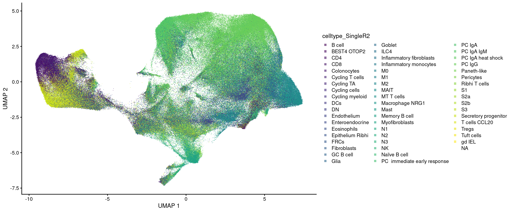
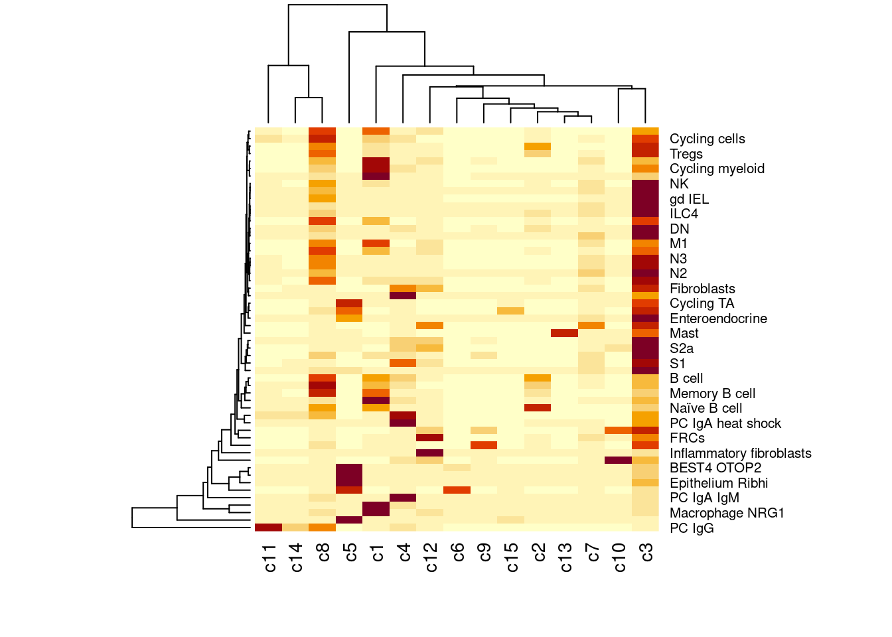

Dataset: IBD cosMX GarridoTrigo2023
Sarah Williams
Data is from paper Macrophage and neutrophil heterogeneity at single-cell spatial resolution in human inflammatory bowel disease from Garrido-Trigo et al 2023, (Garrido-Trigo et al. 2023)
The study included 9 cosmx slides of colonic biopsies
- 3x HC - Healthy controls
- 3x UC - Ulcerative colitis
- 3x CD - Chrones’s disease
Fastantically - not only have they made their raw and annotated data available, but have also shared their analysis code; https://github.com/HelenaLC/CosMx-SMI-IBD
They have also shared browseable interface here: https://servidor2-ciberehd.upc.es/external/garrido/app/
Libraries
library(tidyverse)── Attaching core tidyverse packages ──────────────────────── tidyverse 2.0.0 ──
✔ dplyr 1.1.4 ✔ readr 2.1.5
✔ forcats 1.0.0 ✔ stringr 1.5.1
✔ ggplot2 3.5.1 ✔ tibble 3.2.1
✔ lubridate 1.9.4 ✔ tidyr 1.3.1
✔ purrr 1.0.2
── Conflicts ────────────────────────────────────────── tidyverse_conflicts() ──
✖ dplyr::filter() masks stats::filter()
✖ dplyr::lag() masks stats::lag()
ℹ Use the conflicted package (<http://conflicted.r-lib.org/>) to force all conflicts to become errorslibrary(patchwork)
library(SpatialFeatureExperiment)Warning: replacing previous import 'S4Arrays::makeNindexFromArrayViewport' by
'DelayedArray::makeNindexFromArrayViewport' when loading 'SummarizedExperiment'Warning: replacing previous import 'S4Arrays::makeNindexFromArrayViewport' by
'DelayedArray::makeNindexFromArrayViewport' when loading 'HDF5Array'
Attaching package: 'SpatialFeatureExperiment'
The following object is masked from 'package:purrr':
transpose
The following object is masked from 'package:ggplot2':
unit
The following object is masked from 'package:base':
scalelibrary(alabaster.sfe) # SaveObjectLoading required package: alabaster.baselibrary(scran) Loading required package: SingleCellExperiment
Loading required package: SummarizedExperiment
Loading required package: MatrixGenerics
Loading required package: matrixStats
Attaching package: 'matrixStats'
The following object is masked from 'package:alabaster.base':
anyMissing
The following object is masked from 'package:dplyr':
count
Attaching package: 'MatrixGenerics'
The following objects are masked from 'package:matrixStats':
colAlls, colAnyNAs, colAnys, colAvgsPerRowSet, colCollapse,
colCounts, colCummaxs, colCummins, colCumprods, colCumsums,
colDiffs, colIQRDiffs, colIQRs, colLogSumExps, colMadDiffs,
colMads, colMaxs, colMeans2, colMedians, colMins, colOrderStats,
colProds, colQuantiles, colRanges, colRanks, colSdDiffs, colSds,
colSums2, colTabulates, colVarDiffs, colVars, colWeightedMads,
colWeightedMeans, colWeightedMedians, colWeightedSds,
colWeightedVars, rowAlls, rowAnyNAs, rowAnys, rowAvgsPerColSet,
rowCollapse, rowCounts, rowCummaxs, rowCummins, rowCumprods,
rowCumsums, rowDiffs, rowIQRDiffs, rowIQRs, rowLogSumExps,
rowMadDiffs, rowMads, rowMaxs, rowMeans2, rowMedians, rowMins,
rowOrderStats, rowProds, rowQuantiles, rowRanges, rowRanks,
rowSdDiffs, rowSds, rowSums2, rowTabulates, rowVarDiffs, rowVars,
rowWeightedMads, rowWeightedMeans, rowWeightedMedians,
rowWeightedSds, rowWeightedVars
Loading required package: GenomicRanges
Loading required package: stats4
Loading required package: BiocGenerics
Attaching package: 'BiocGenerics'
The following objects are masked from 'package:lubridate':
intersect, setdiff, union
The following objects are masked from 'package:dplyr':
combine, intersect, setdiff, union
The following objects are masked from 'package:stats':
IQR, mad, sd, var, xtabs
The following objects are masked from 'package:base':
anyDuplicated, aperm, append, as.data.frame, basename, cbind,
colnames, dirname, do.call, duplicated, eval, evalq, Filter, Find,
get, grep, grepl, intersect, is.unsorted, lapply, Map, mapply,
match, mget, order, paste, pmax, pmax.int, pmin, pmin.int,
Position, rank, rbind, Reduce, rownames, sapply, saveRDS, setdiff,
table, tapply, union, unique, unsplit, which.max, which.min
Loading required package: S4Vectors
Attaching package: 'S4Vectors'
The following objects are masked from 'package:lubridate':
second, second<-
The following objects are masked from 'package:dplyr':
first, rename
The following object is masked from 'package:tidyr':
expand
The following object is masked from 'package:utils':
findMatches
The following objects are masked from 'package:base':
expand.grid, I, unname
Loading required package: IRanges
Attaching package: 'IRanges'
The following object is masked from 'package:lubridate':
%within%
The following objects are masked from 'package:dplyr':
collapse, desc, slice
The following object is masked from 'package:purrr':
reduce
Loading required package: GenomeInfoDb
Loading required package: Biobase
Welcome to Bioconductor
Vignettes contain introductory material; view with
'browseVignettes()'. To cite Bioconductor, see
'citation("Biobase")', and for packages 'citation("pkgname")'.
Attaching package: 'Biobase'
The following object is masked from 'package:MatrixGenerics':
rowMedians
The following objects are masked from 'package:matrixStats':
anyMissing, rowMedians
The following object is masked from 'package:alabaster.base':
anyMissing
Loading required package: scuttlelibrary(scater)
library(scuttle)
library(bluster) # clustering parameters, needed for passing htreads to NNGraphParam
library(BiocParallel)
#library(alabaster.sfe)
# Requires v1.9.3 to use alabaster.sfe to save object.
# alabaster.sfe not yet in bioconductor production March 2025
#renv::install('pachterlab/SpatialFeatureExperiment@devel')
#renv::install('pachterlab/alabaster.sfe')Config
dataset_dir <- '~/projects/spatialsnippets/datasets/'
project_data_dir <- file.path(dataset_dir,'GSE234713_IBDcosmx_GarridoTrigo2023')
sample_dir <- file.path(project_data_dir, "raw_data_for_sfe/")
annotation_file <- file.path(project_data_dir,"GSE234713_CosMx_annotation.csv.gz")
data_dir <- file.path(project_data_dir, "processed_data/")
sfe_01_loaded <- file.path(data_dir, "GSE234713_CosMx_IBD_sfe_01_loaded")
# config
min_count_per_cell <- 50
min_detected_genes_per_cell <- 20 # from paper.
max_pc_negs <- 1.5
max_avg_neg <- 0.5
sample_codes <- c(HC="Healthy controls",UC="Ulcerative colitis",CD="Crohn's disease")Data download
From the project description:
Raw data on GEO here; https://www.ncbi.nlm.nih.gov/geo/query/acc.cgi?acc=GSE234713
Inflammatory bowel diseases (IBDs) including ulcerative colitis (UC) and Crohn’s disease (CD) are chronic inflammatory diseases with increasing worldwide prevalence that show a perplexing heterogeneity in manifestations and response to treatment. We applied spatial transcriptomics at single-cell resolution (CosMx Spatial Molecular Imaging) to human inflamed and uninflamed intestine.
The following files were download from GEO
- GSE234713_CosMx_annotation.csv.gz
- GSE234713_CosMx_normalized_matrix.txt.gz
- GSE234713_RAW.tar: RAW data was downloaded via custom downlod in 3
batches, one per group
- GSE234713_RAW_CD.tar
- GSE234713_RAW_HC.tar
- GSE234713_RAW_UC.tar
- GSE234713_ReadMe_SMI_Data_File.html
cd raw_data
tar -xf GSE234713_RAW_CD.tar
tar -xf GSE234713_RAW_HC.tar
tar -xf GSE234713_RAW_UC.tarConstruct a folder with each slide’s info.
NB: Also due to limited temp directory space, I need to gunzip the files (this really shouldn’t be needed) that get read by the efficient DT reading functions. Symptom of that is silently incomplete file reads. https://www.linkedin.com/pulse/trivial-fix-after-3-hours-debugging-kirill-tsyganov/
mkdir raw_data_for_sfe
cp raw_data/*tar.gz raw_data_for_sfe/
cd raw_data_for_sfe/
tar -xzf *.tar.gz
cd /home/s.williams/projects/spatialsnippets/datasets/GSE234713_IBDcosmx_GarridoTrigo2023/raw_data_for_sfe
for sample in GSM7473682_HC_a GSM7473685_UC_a GSM7473688_CD_a GSM7473683_HC_b GSM7473686_UC_b GSM7473689_CD_b GSM7473684_HC_c GSM7473687_UC_c GSM7473690_CD_c; do
echo $sample
#cd /home/s.williams/projects/spatialsnippets/datasets/GSE234713_IBDcosmx_GarridoTrigo2023/raw_data_for_sfe
mkdir raw_data_for_sfe/${sample}
cp raw_data/${sample}_* raw_data_for_sfe/${sample}
gunzip raw_data_for_sfe/${sample}/*
# Separately copy in the polygons files (supplied by authors)
samplecode=${sample: -4}
echo $samplecode
cp /home/s.williams/projects/spatialsnippets/datasets/GSE234713_IBDcosmx_GarridoTrigo2023/polygons/${samplecode}.csv ${sample}/${sample}-polygons.csv
done
Read in each sample as a ‘SpatialExperiment’ using a function from the SpatialExperimentIO package.
We don’t have polygon files for this dataset, otherwise would load a a SpatialFeatureExperiment. A spatialFeatureExperiment object is a SpatialExperiment object with extra features (ie. it inherits from it).
Data load
Data is loaded into a SpatialFeatureExperiment object with the following code (long running).
################################################################################
## LIBRARIES
library(tidyverse)
library(patchwork)
library(SpatialFeatureExperiment)
library(alabaster.base)
library(alabaster.sfe) # SaveObject
library(alabaster.bumpy)
library(scran)
library(scater)
library(scuttle)
library(bluster) # clustering parameters, needed for passing htreads to NNGraphParam
library(BiocParallel)
library(data.table) # fread fast file reading
library(BumpyMatrix) # internal represeation of molecules
################################################################################
## CONFIG
dataset_dir <- '~/projects/spatialsnippets/datasets/'
project_data_dir <- file.path(dataset_dir,'GSE234713_IBDcosmx_GarridoTrigo2023')
sample_dir <- file.path(project_data_dir, "raw_data_for_sfe/")
annotation_file <- file.path(project_data_dir,"GSE234713_CosMx_annotation.csv.gz")
data_dir <- file.path(project_data_dir, "processed_data/")
sfe_01_loaded <- file.path(data_dir, "GSE234713_CosMx_IBD_sfe_01_loaded")
# config
min_count_per_cell <- 50 # previusly 100
min_detected_genes_per_cell <- 20 # from paper.
max_pc_negs <- 1.5
max_avg_neg <- 0.5
sample_codes <- c(HC="Healthy controls",UC="Ulcerative colitis",CD="Crohn's disease")
################################################################################
## FUNCTIONS
##5 has annot geom issue
#sfe_data_dir = sample_dirs[5]
#the_sample = sample_names[5]
load_sfe_with_molecules <- function (sfe_data_dir, the_sample) {
# This function loads SFE without molecules
# then loads the molecules and adds them in (which avoids an error, maybe ram related)
# It also checks for weird missing polygons - miss one cell and your cell outlines are just feature outlines.
# Where add_molecules=TRUE.
#Error: Capacity error: array cannot contain more than 2147483646 bytes, have 2148177769
# Pulls cell ids from cell_id
#"1_1" "2_1" "3_1" "4_1" "5_1" "6_1"
# "165_349" "166_349" "167_349" "168_349" "169_349" "170_349"
# <cellnum>_<fov>
# Updated to sfe 1.9.3 (for alabaster.sfe support) - sample_id is now recorded, no need to edit.
print("Read SFE without molecules")
sfe <- readCosMX(data_dir=sfe_data_dir,
sample_id = the_sample,
add_molecules = FALSE # True yeilds errors above.
)
# the tx file within the data dir
tx_file <- file.path(sfe_data_dir, paste0(the_sample,"_tx_file.csv"))
# Read in transcript coordinates, but only keep cellular tx (strips out alot)
#fov cell_ID cell x_local_px y_local_px x_global_px y_global_px z target CellComp
#1 1 c_1_1_1 4255 140 10366.964 126795.1 2 Cd74 Cytoplasm
#1 1 c_1_1_1 4255 140 10366.944 126795.5 7 Ifitm3 Cytoplasm
#1 1 c_1_1_1 4252 139 10363.784 126796.5 6 Acta2 Cytoplasm
#1 1 c_1_1_1 4250 150 10362.394 126785.8 3 Ifit1 Cytoplasm
mol_table <- fread(tx_file,
#nrow=100000,
select=c('cell_ID', 'fov', 'target', 'x_global_px', 'y_global_px', 'CellComp'))
#dim(mol_table)
#It is possible (at least with cyto2 segmenation) to get a 'None' CellComp, and a actuall Cell_ID
# (those cell calls are dodgy looking though - probably filter them out Later )
#mol_table <- mol_table[CellComp != 'None', ] # Assigned to cells only
# So insead filter the no cellID ones!
print("Reading molecules")
mol_table <- mol_table[cell_ID != 0, ]
mol_table <- mol_table[,cell_id:=paste0(cell_ID,"_",fov)]
mol_table <- mol_table[,!c('CellComp', "fov","cell_ID")]
#dim(mol_table)
# construct BumpyMatrix
print("formatting molecules")
mol_bm <- splitAsBumpyMatrix(
mol_table[, c("x_global_px", "y_global_px")],
row = mol_table$target, col = mol_table$cell_id,
sparse =TRUE) # sparse=TRUE is important, and not default !! 10fold less ram.
rm(mol_table)
# there may be more 'cells' from the tx file than in the object, but these
# are quietly ignored. But everything in sft should be in mol_bm!
stopifnot(all(rownames(sfe) %in% rownames(mol_bm) ))
#stopifnot(all( colnames(sfe) %in% colnames(mol_bm) ))
# Cells with no tx transcripts? - Possible!
# Silently drop them.
#missing_cells <- colnames(sfe)[!colnames(sfe) %in% colnames(mol_bm) ]
#colData(sfe)[missing_cells,] %>% as.data.frame() %>% View()
#table(colSums(counts(sfe)[, missing_cells]))
#genuinely, nope, they have no transcirpts.
common_cells <- intersect(colnames(mol_bm),colnames(sfe))
sfe <- sfe[,common_cells]
mol_bm <- mol_bm[rownames(sfe),common_cells] # match order and drop cells not in sfe, ditto genes
# now save the molecules in the object
print("Storing molecules")
assay(sfe, 'molecules') <- mol_bm
# Where there is missing polygon data for sfe,
# remove the corresponding cell
# Otherwise you end up with spatial annotations instead of segmentations,
# which means files cant be joined (and probably other issues!)
# Affects one (1!) cell in a dataset - I do not care to see why.
# Should do nothing otherwise.
print("Checking for polygonless cells")
sfe<-check_and_rm_cells_without_polygons(sfe)
# Move negatives into altExpr
probes <- rownames(rowData(sfe))
rowData(sfe)$target <- probes
rowData(sfe)$CodeClass <- factor(ifelse(grepl("^SystemControl",probes), "FalseCode",
ifelse(grepl("^NegPrb",probes), "NegProbe","RNA" )),
levels=c("RNA","NegProbe","FalseCode"))
rowData(sfe)$CodeClass <- droplevels(rowData(sfe)$CodeClass )
# An attempt at storing negative probes in AltExp, but is causing issues with saveing.
# unsure if sfe altexp is supported?
# leaving in main assay for now.
# No Falsecodes, only negatives
#sfe.neg <- sfe[rowData(sfe)$CodeClass != "RNA",] # you put your neg probes in
#sfe <- sfe[rowData(sfe)$CodeClass == "RNA",] # you take your neg probes out
#altExp(sfe,"NegPrb") <- sfe.neg # you put your neg probes in
## and you shake the data out
return(sfe)
}
load_one_sample_as_sfe <- function(sfe_data_dir, the_sample) {
print(the_sample)
sfe <- load_sfe_with_molecules(sfe_data_dir, the_sample)
# sample code nice and short, and may be inferred
sample_code <- substr(the_sample,12,16)
sfe$sample_id <- the_sample
sfe$slide_name <- the_sample
# and some experimental info
sfe$individual_code <- substr(the_sample,12,16)
sfe$tissue_sample <- substr(the_sample,12,16)
sfe$group <- factor(substr(the_sample, 12,13), levels=names(sample_codes))
sfe$condition <- factor(as.character(sample_codes[sfe$group]), levels=sample_codes)
sfe$fov_name <- paste0(sfe$individual_code,"_", str_pad(sfe$fov, 3, 'left',pad='0'))
# cell labels: need to match that of the annotation file:
# id subset SingleR2
# HC_c_2_1 HC_c_2_1 stroma Pericytes
# HC_c_3_1 HC_c_3_1 stroma Endothelium
# HC_c_4_1 HC_c_4_1 stroma Pericytes
#Have this:
# fov cell_ID Area AspectRatio CenterX_local_px
#1 1 1 6153 0.67 2119
#2 1 10 5971 0.63 1265
#3 1 100 1785 1.11 2954
#4 1 1000 3946 0.59 2959
# individual_code tissue_sample group condition fov_name
# HC_a HC_a HC Healthy controls HC_a_001
# HC_a HC_a HC Healthy controls HC_a_001
# HC_a HC_a HC Healthy controls HC_a_001
#> table(table(sfe$cell_ID))
# 1 2 3 4 5 6 7 8 9 10 11 12 13 14 15 16 17 18 19
# 699 110 56 78 79 110 100 165 21 4 24 38 24 5 66 265 36 190 1451
# HC_c_4_1
# <>>sample code>_<cell_ID>
# Where cell_ID includes <number>_<fovnum>: "3518_20"
sfe$cell <- paste0(sfe$tissue_sample, "_",sfe$cell_ID)
sfe$total_count <- colSums(counts(sfe))
sfe$distinct_genes <- colSums(counts(sfe)!=0)
sfe$total_count_log10 <- log10(sfe$total_count)
#Negative probes
sfe$neg_count <- colSums(counts(sfe[rowData(sfe)$CodeClass == "NegProbe", ]))
sfe$avg_neg <- colMeans(counts(sfe[rowData(sfe)$CodeClass == "NegProbe", ]))
sfe$pc_neg<- sfe$neg_count / (sfe$neg_count + sfe$total_count) * 100
return(sfe)
}
check_and_rm_cells_without_polygons <-function(sfe) {
# Theory:
# A cell polygon is empty ()
# Yeilding folling error during parquet construction:
#">>> Constructing cell polygons
# >>> ..removing 1 empty polygons"
#
# This means that theres one more 'cell' than 'cell segmentation genometriy'
#
# cellSeg() function will look for a match in those counts and store
# geometries in
# * colGeometries if cell counts match
# * annotGeometires if they dont.
#
# Consequently, you can't join / cbind sfe object unless their colgeometries match.
#
# Error in value[[3L]](cond) :
# failed to combine 'int_colData' in 'cbind(<SpatialFeatureExperiment>)':
# failed to rbind column 'colGeometries' across DataFrame objects: the DFrame objects to combine must have
# the same column names
#
#
# Seems to be rare, not ever datasset, and can be just one cell..
#
# This function will turn annotGeom back into colGeom, buy remooving the missing cells
#
if ('cellSeg' %in% names(annotGeometries(sfe))) {
print('Found cellSeg in annotGeometries instead of colGeometries')
geomet_cells <- rownames(annotGeometries(sfe)$cellSeg)
sfe_cells <- colnames(sfe)
common_cells <- intersect(sfe_cells, geomet_cells)
# Can find cells with geometrey, but not in object.
# possibly the ones with no counts?
#stopifnot(all(geomet_cells %in% sfe_cells))
geomet_cells_without_sfe <- setdiff( geomet_cells, sfe_cells)
print(paste("dropping",length(geomet_cells_without_sfe), "cells from cell seg geometry (absent in count matrix)"))
# Warn on number of cells dropped
cells_without_geomet <- setdiff(sfe_cells, geomet_cells)
print(paste("dropping",length(cells_without_geomet), "cells from counts matrix (no segmentation outline)"))
# Drop cells
sfe <- sfe[,common_cells]
#annotGeometries(sfe)$cellSeg <- annotGeometries(sfe)$cellSeg[common_cells,]
#annogeo <- annotGeometries(sfe)$cellSeg
#annogeo <- annotGeometries(sfe)$cellSeg[common_cells,]
# Put it back in using the accessor, all proper like
cellSeg(sfe) <- annotGeometries(sfe)$cellSeg[common_cells,]
# Remove and
# for consistantcy, unname the empty list
annotGeometries(sfe)$cellSeg <- NULL
annotGeometries(sfe) <- unname(annotGeometries(sfe))
# Dropping the sampleID, which got added for some reason.
keep_cols <- colnames(cellSeg(sfe))
keep_cols <- keep_cols[keep_cols != 'sample_id']
cellSeg(sfe) <- cellSeg(sfe)[,keep_cols]
}
return(sfe)
}
do_basic_preprocessing <- function(sfe,
hvg_prop = 0.3,
num_pcs = 20,
sampleblock = NULL,
BPPARAM = MulticoreParam(16) # and everything else others
) {
# Normalization.
print('Normalise...')
sfe <- logNormCounts(sfe, BPPARAM=BPPARAM)
# Highly variable genes, but ignoring individual level data.
# Attempts to model technival vs bio variation
# Choosing 30% of genes, since we've only got 1000, and they are selected for cell type discernment.
# 30% is arbitrary!
print("Model gene variance...")
if (is.null(sampleblock)) {
gene_variances <- modelGeneVar(sfe, BPPARAM=BPPARAM)
} else {
to_block <- as.factor(colData(sfe)[,sampleblock])
gene_variances <- modelGeneVar(sfe, BPPARAM=BPPARAM, block=to_block)
}
print("get top hvg...")
# only consider RNA probes
rna_probes <- rowData(sfe)$target[rowData(sfe)$CodeClass == "RNA"]
gene_vairances.RNAonly <- gene_variances[rna_probes, ]
hvg <- getTopHVGs(gene_vairances.RNAonly, prop=hvg_prop)
rowData(sfe)$hvg <- rowData(sfe)$target %in% hvg
print("run pca...")
sfe <- fixedPCA(sfe, subset.row = hvg)
print("run UMAP...")
sfe <- runUMAP(sfe, pca=num_pcs, BPPARAM=BPPARAM )
print("cluster...")
set.seed(12) # set seed for consistant clustering.
#sfe$nn.cluster <- clusterCells(sfe, use.dimred="PCA", BLUSPARAM = bluster::NNGraphParam(num.threads=16))
# try snn
## Haven't seen evidence of this using multiple thresads.
# Split the graph building and clustering steps, as gettting some untraceable issues.
g <- buildSNNGraph(sfe, k=20, use.dimred = 'PCA', BPPARAM=BPPARAM)
print('built SNN graph')
saveRDS(g, file.path("~/snn_graph_object.rds"))
sfe$snn.cluster <- igraph::cluster_louvain(g)$membership
print('clustered SNN graph')
sfe$snn.cluster <- as.factor(sfe$snn.cluster)
sfe$cluster_code <- factor(paste0("c",sfe$snn.cluster), levels=paste0("c",levels(sfe$snn.cluster)))
print("Done")
return(sfe)
}
################################################################################
## Go
#Load an annotate all samples in the directory full of samples (each as flatfiles)
if ( FALSE ) { # ALREADY RUN
# Get list of samples
sample_names <- list.files(sample_dir)
sample_dirs <- file.path(sample_dir, sample_names)
# Use multiple apply to run each with corresponding path.
sfe_list <- mapply(FUN=load_one_sample_as_sfe ,
sfe_data_dir=sample_dirs,
the_sample= sample_names)
# This is ineffient, but it works - cbind can join pairs of sfe object.
sfe <- do.call(cbind, sfe_list)
print("Merged. Now apply annotation.")
# Add the cell annotation from the paper.
anno_table <- read_csv(annotation_file)
anno_table <- as.data.frame(anno_table)
rownames(anno_table) <- anno_table$id
head(colData(sfe))
head(anno_table)
sfe$celltype_subset <- factor(anno_table[sfe$cell,]$subset)
sfe$celltype_SingleR2 <- factor(anno_table[sfe$cell,]$SingleR2)
# and foactorise a few things now we've got the full table
sfe$fov_name <- factor(sfe$fov_name)
sfe$individual_code <- factor(sfe$individual_code)
sfe$tissue_sample <- factor(sfe$tissue_sample)
# There are a few unannotted, will remove
table(is.na(sfe$celltype_subset))
ncol(sfe)
sfe <- sfe[ ,sfe$distinct_genes >= min_detected_genes_per_cell &
sfe$avg_neg <= max_avg_neg &
!(is.na(sfe$celltype_subset) )]
ncol(sfe)
}
## Preprocessing
#hvg_prop = 0.3
#num_pcs = 20
#sampleblock = NULL
#num_threads = 16
#BPPARAM = MulticoreParam(num_threads)
#saveObject(sfe, "~/testX2")
sfe <- readObject("~/testX2")
#sfe <- sfe[,1:400]
sfe <- do_basic_preprocessing(sfe, num_pcs = 15)
## Save
saveObject(sfe, sfe_01_loaded)Load in the saved object
sfe <- readObject(sfe_01_loaded)>>> Reading SpatialExperiment>>> Reading colgeometriesBasic QC filter
Min count per cell
For interest, not filtering on total counts.
ggplot(colData(sfe), aes(x=total_count, col=sample_id)) +
geom_density() +
scale_x_log10() +
theme_bw() +
ggtitle("Counts per cell")Min detected genes per cell
Distinct genes observed per cell (number of detected genes per cell)
ggplot(colData(sfe), aes(x=distinct_genes, col=sample_id)) +
geom_density() +
geom_vline(xintercept = min_detected_genes_per_cell, lty=3) +
scale_x_log10() +
theme_bw() +
ggtitle("Counts per cell")Percent Negative probes
ggplot(colData(sfe), aes(x=pc_neg, col=sample_id)) +
geom_density() +
geom_vline(xintercept = max_pc_negs, lty=3) +
scale_x_log10() +
theme_bw() +
ggtitle("Negative probe composition")Warning in scale_x_log10(): log-10 transformation introduced infinite values.Warning: Removed 207963 rows containing non-finite outside the scale range
(`stat_density()`).ggplot(colData(sfe), aes(x=avg_neg, col=sample_id)) +
geom_density() +
geom_vline(xintercept = max_avg_neg, lty=3) +
theme_bw() +
ggtitle("Negative probe average")Use bottom right corner;
ggplot(colData(sfe), aes(y=avg_neg, x=total_count)) +
geom_point(pch=3, alpha=0.1) +
geom_hline(yintercept = max_avg_neg, lty=3) +
geom_vline(xintercept = min_count_per_cell, lty=3) +
scale_x_log10() +
theme_bw() +
ggtitle("Negative probes vs counts")Apply filteres
From paper: “Cells with an average negative control count greater than 0.5 and less than 20 detected features were filtered out.”
Applying a different threshold (arbitrarily), results will differ.
How many cells per sample?
table(sfe$tissue_sample)
CD_a CD_b CD_c HC_a HC_b HC_c UC_a UC_b UC_c
31569 70477 53331 39097 54056 27895 49232 76588 54777 Basic plots
UMAP
Sample
plotUMAP(sfe, colour_by = 'tissue_sample', point_shape='.') +
guides(colour = guide_legend(override.aes = list(shape=15)))Condition
plotUMAP(sfe, colour_by = 'condition', point_shape='.') +
guides(colour = guide_legend(override.aes = list(shape=15)))Condition X Sample
p1 <- plotUMAP(sfe[,sfe$group=='HC'], colour_by = 'tissue_sample', point_shape='.') + ggtitle ("Healthy Controls") +
guides(colour = guide_legend(override.aes = list(shape=15)))
p2 <- plotUMAP(sfe[,sfe$group=='UC'], colour_by = 'tissue_sample', point_shape='.') + ggtitle("Ulcerative colitis") +
guides(colour = guide_legend(override.aes = list(shape=15)))
p3 <- plotUMAP(sfe[,sfe$group=='CD'], colour_by = 'tissue_sample', point_shape='.') + ggtitle("Crohn's disease")+
guides(colour = guide_legend(override.aes = list(shape=15)))
p1 + p2 + p3
Total counts
plotUMAP(sfe, colour_by = 'total_count_log10', point_shape='.') Clustered
plotUMAP(sfe, colour_by = 'cluster_code', point_shape='.', text_by='cluster_code') +
guides(colour = guide_legend(override.aes = list(shape=15)))celltype_subset
Classifications from Garrido-Trigo et al 2023.
plotUMAP(sfe, colour_by = 'celltype_subset', text_by='celltype_subset', point_shape='.') +
guides(colour = guide_legend(override.aes = list(shape=15)))celltype_SingleR2
Classifications from Garrido-Trigo et al 2023.
plotUMAP(sfe, colour_by = 'celltype_SingleR2', point_shape='.') +
guides(colour = guide_legend(override.aes = list(shape=15)))Warning: Removed 2 rows containing missing values or values outside the scale range
(`geom_point()`).
Clustering
Double checking the clusters line up with annotaiaon
table(sfe$celltype_subset)
epi myeloids plasmas stroma tcells
106413 54946 169744 111511 14408 table(sfe$celltype_SingleR2)
B cell BEST4 OTOP2
6906 13904
CD4 CD8
3080 3149
Colonocytes Cycling T cells
21531 412
Cycling TA Cycling cells
3036 3116
Cycling myeloid DCs
2167 1688
DN Endothelium
835 16734
Enteroendocrine Eosinophils
1856 646
Epithelium Ribhi FRCs
6575 11982
Fibroblasts GC B cell
2509 4994
Glia Goblet
7067 12703
ILC4 Inflammatory fibroblasts
198 13779
Inflammatory monocytes M0
2167 4743
M1 M2
1317 23279
MAIT MT T cells
1505 369
Macrophage NRG1 Mast
10000 4766
Memory B cell Myofibroblasts
8407 23353
N1 N2
1355 1371
N3 NK
1447 390
Naïve B cell PC immediate early response
10999 12509
PC IgA PC IgA IgM
1749 21546
PC IgA heat shock PC IgG
6160 93356
Paneth-like Pericytes
2982 13034
Ribhi T cells S1
244 6879
S2a S2b
5277 6260
S3 Secretory progenitor
4637 37487
T cells CCL20 Tregs
999 2647
Tuft cells gd IEL
6339 580 table(sfe$cluster_code)
c1 c2 c3 c4 c5 c6 c7 c8 c9 c10 c11 c12 c13
45464 9840 80646 48171 68143 9325 11989 51226 10659 17502 43056 32669 3746
c14 c15
17781 6805 Composition. Expect an obvious but imperfect grouping between clustering and cell typing. Will be using annotation for analysis.
heatmap(table(sfe$celltype_SingleR2, sfe$celltype_subset))heatmap(table(sfe$celltype_subset, sfe$cluster_code))heatmap(table(sfe$celltype_SingleR2,sfe$cluster_code))
sessionInfo()R version 4.4.0 (2024-04-24)
Platform: x86_64-pc-linux-gnu
Running under: Ubuntu 22.04.5 LTS
Matrix products: default
BLAS: /usr/lib/x86_64-linux-gnu/openblas-pthread/libblas.so.3
LAPACK: /usr/lib/x86_64-linux-gnu/openblas-pthread/libopenblasp-r0.3.20.so; LAPACK version 3.10.0
locale:
[1] LC_CTYPE=en_AU.UTF-8 LC_NUMERIC=C
[3] LC_TIME=en_AU.UTF-8 LC_COLLATE=en_AU.UTF-8
[5] LC_MONETARY=en_AU.UTF-8 LC_MESSAGES=en_AU.UTF-8
[7] LC_PAPER=en_AU.UTF-8 LC_NAME=en_AU.UTF-8
[9] LC_ADDRESS=en_AU.UTF-8 LC_TELEPHONE=en_AU.UTF-8
[11] LC_MEASUREMENT=en_AU.UTF-8 LC_IDENTIFICATION=en_AU.UTF-8
time zone: Etc/UTC
tzcode source: system (glibc)
attached base packages:
[1] stats4 stats graphics grDevices datasets utils methods
[8] base
other attached packages:
[1] BiocParallel_1.40.0 bluster_1.16.0
[3] scater_1.34.1 scran_1.34.0
[5] scuttle_1.16.0 SingleCellExperiment_1.28.1
[7] SummarizedExperiment_1.36.0 Biobase_2.66.0
[9] GenomicRanges_1.58.0 GenomeInfoDb_1.42.1
[11] IRanges_2.40.1 S4Vectors_0.44.0
[13] BiocGenerics_0.52.0 MatrixGenerics_1.18.1
[15] matrixStats_1.5.0 alabaster.sfe_0.99.2001
[17] alabaster.base_1.6.1 SpatialFeatureExperiment_1.9.8
[19] patchwork_1.3.0 lubridate_1.9.4
[21] forcats_1.0.0 stringr_1.5.1
[23] dplyr_1.1.4 purrr_1.0.2
[25] readr_2.1.5 tidyr_1.3.1
[27] tibble_3.2.1 ggplot2_3.5.1
[29] tidyverse_2.0.0 workflowr_1.7.1
loaded via a namespace (and not attached):
[1] splines_4.4.0 later_1.4.1
[3] bitops_1.0-9 R.oo_1.27.0
[5] alabaster.bumpy_1.6.0 lifecycle_1.0.4
[7] sf_1.0-19 edgeR_4.4.2
[9] rprojroot_2.0.4 processx_3.8.5
[11] lattice_0.22-6 MASS_7.3-64
[13] magrittr_2.0.3 limma_3.62.2
[15] sass_0.4.9 rmarkdown_2.29
[17] jquerylib_0.1.4 yaml_2.3.10
[19] metapod_1.14.0 httpuv_1.6.15
[21] sp_2.2-0 cowplot_1.1.3
[23] DBI_1.2.3 multcomp_1.4-28
[25] abind_1.4-8 spatialreg_1.3-6
[27] zlibbioc_1.52.0 R.utils_2.12.3
[29] BumpyMatrix_1.14.0 RCurl_1.98-1.16
[31] TH.data_1.1-3 sandwich_3.1-1
[33] git2r_0.33.0 GenomeInfoDbData_1.2.13
[35] ggrepel_0.9.6 irlba_2.3.5.1
[37] alabaster.sce_1.6.0 terra_1.8-21
[39] units_0.8-5 dqrng_0.4.1
[41] DelayedMatrixStats_1.28.1 codetools_0.2-20
[43] DropletUtils_1.26.0 DelayedArray_0.32.0
[45] xml2_1.3.6 tidyselect_1.2.1
[47] UCSC.utils_1.2.0 farver_2.1.2
[49] viridis_0.6.5 ScaledMatrix_1.14.0
[51] jsonlite_1.8.9 BiocNeighbors_2.0.1
[53] e1071_1.7-16 survival_3.8-3
[55] tools_4.4.0 sfarrow_0.4.1
[57] Rcpp_1.0.14 glue_1.8.0
[59] gridExtra_2.3 SparseArray_1.6.1
[61] xfun_0.50 EBImage_4.48.0
[63] HDF5Array_1.34.0 alabaster.spatial_1.6.1
[65] withr_3.0.2 BiocManager_1.30.25
[67] fastmap_1.2.0 boot_1.3-31
[69] rhdf5filters_1.18.0 spData_2.3.4
[71] rsvd_1.0.5 callr_3.7.6
[73] digest_0.6.37 timechange_0.3.0
[75] R6_2.5.1 colorspace_2.1-1
[77] wk_0.9.4 LearnBayes_2.15.1
[79] RBioFormats_1.6.0 jpeg_0.1-10
[81] R.methodsS3_1.8.2 generics_0.1.3
[83] renv_1.0.5 data.table_1.16.4
[85] class_7.3-23 httr_1.4.7
[87] htmlwidgets_1.6.4 S4Arrays_1.6.0
[89] whisker_0.4.1 spdep_1.3-10
[91] pkgconfig_2.0.3 rJava_1.0-11
[93] gtable_0.3.6 XVector_0.46.0
[95] htmltools_0.5.8.1 fftwtools_0.9-11
[97] scales_1.3.0 alabaster.matrix_1.6.1
[99] png_0.1-8 SpatialExperiment_1.16.0
[101] knitr_1.49 rstudioapi_0.17.1
[103] tzdb_0.4.0 rjson_0.2.23
[105] coda_0.19-4.1 nlme_3.1-166
[107] proxy_0.4-27 cachem_1.1.0
[109] zoo_1.8-12 rhdf5_2.50.2
[111] KernSmooth_2.23-26 vipor_0.4.7
[113] parallel_4.4.0 arrow_19.0.1
[115] s2_1.1.7 pillar_1.10.1
[117] grid_4.4.0 alabaster.schemas_1.6.0
[119] vctrs_0.6.5 promises_1.3.2
[121] BiocSingular_1.22.0 beachmat_2.22.0
[123] cluster_2.1.8 sfheaders_0.4.4
[125] beeswarm_0.4.0 evaluate_1.0.3
[127] zeallot_0.1.0 magick_2.8.5
[129] mvtnorm_1.3-3 cli_3.6.3
[131] locfit_1.5-9.11 compiler_4.4.0
[133] rlang_1.1.5 crayon_1.5.3
[135] labeling_0.4.3 classInt_0.4-11
[137] ps_1.8.1 ggbeeswarm_0.7.2
[139] getPass_0.2-4 fs_1.6.5
[141] stringi_1.8.4 viridisLite_0.4.2
[143] alabaster.se_1.6.0 deldir_2.0-4
[145] assertthat_0.2.1 munsell_0.5.1
[147] tiff_0.1-12 Matrix_1.7-1
[149] hms_1.1.3 bit64_4.6.0-1
[151] sparseMatrixStats_1.18.0 Rhdf5lib_1.28.0
[153] statmod_1.5.0 alabaster.ranges_1.6.0
[155] igraph_2.1.4 bslib_0.9.0
[157] bit_4.5.0.1